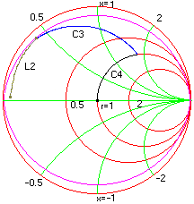

Example 6
Large signal amplifier design: the AN721 input match
This example refers to section 4.2 in Motorola's application note AN721. Here Smith chart is used to design an input/output matching network for a RF power transistor.
Problem: Design a network to match 2N5642 to deliver 20W between 50 ohms source and load at 175 MHz. Available supply voltage is 28 Volts. Design for a maximum input Q of 10.
Solution:
i) Input Match: The data sheets for the 2N5642 transistor provide input impedance information. The series input impedance for the required operating conditions is 1.94 ohm in series with a reactance of 1.1 ohm. This value is assigned as the load so that it becomes our starting point. The frequency is set to 175 MHz. Draw a Q circle of 10 from the chart window. In the schematic window we start with a series inductor to the load. Since the input Q is specified at 10 we increase the inductance until the Q value of 10 is reached, the next step is to add parallel capacitor and determine its value so that it meets the 50 ohms constant resistance circle. Finally we cancel out the remaining inductance by adding a series capacitor to get to the center of the chart. The figure below illustrated the transformations.
